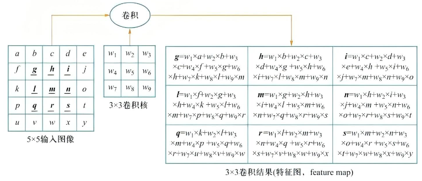
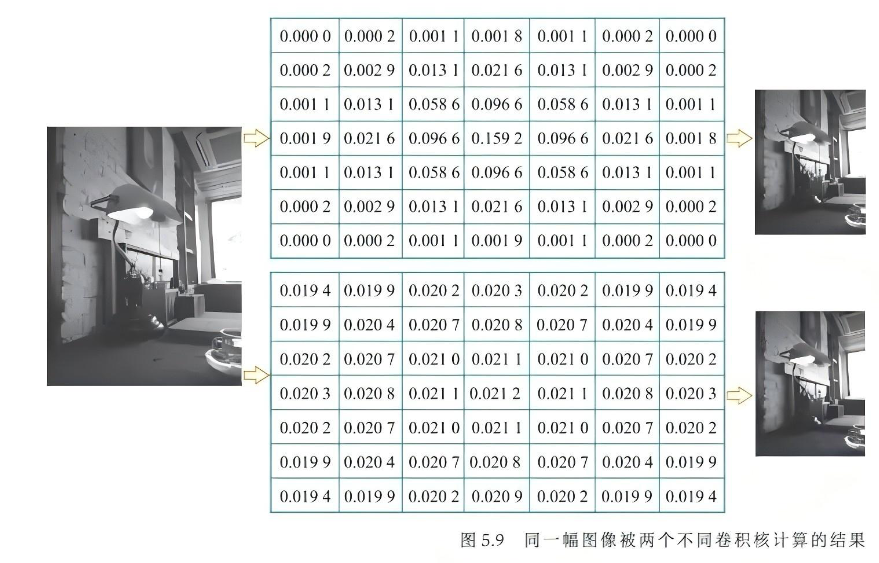
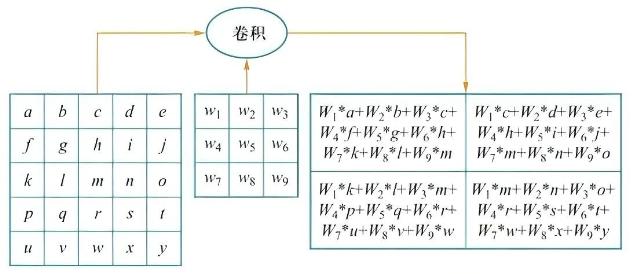
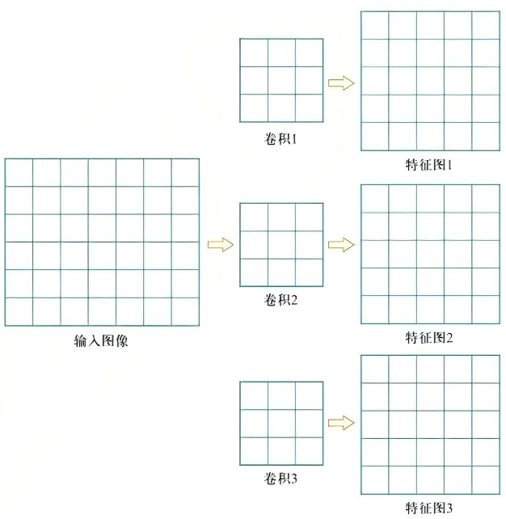
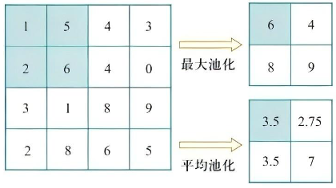
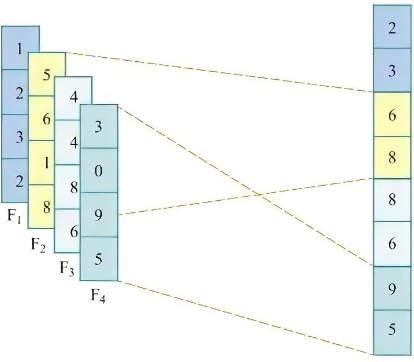
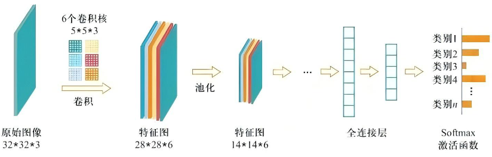

5.4
在前馈神经网络中，输入层的输入数据直接与第一个隐藏层中的所有神经元相互连接。如果输入数据是一幅图像，需要把灰度图像（二维矩阵）或彩色图像（三维矩阵）转换为向量形式。例如，给定一幅分辨率为 \(1000\times1000\) 的灰度图像，输入数据为一个 1 000 000 维的向量，如果输入数据与第一个隐藏层中的所有神经元均相连，且第一个隐藏层的维度与输入维度一致，则输入层到第一个隐藏层之间待训练的参数数量为 \(10^{12}\) 个，模型参数数量如此巨大，不仅会占用大量计算机内存，而且也会使神经网络模型的训练变得难以收敛。因此，对于图像这样的数据，不能直接将所构成的像素点向量与前馈神经网络中的每个神经元相连。
1959 年，戴维·胡贝尔和托尔斯滕·维泽尔发现了人脑“视觉系统信息分层处理”这一机制，即可视皮层对外界信息是分级感受的。受这一发现启发，1980 年，Kunihiko Fukushima 对神经科学所发现的结构进行了计算机模拟，提出通过级联方式（cascade，即逐层滤波）实现一种满足平移不变性的网络 Neocognitron，这就是卷积神经网络的前身（Fukushima，1980，1988）。20 世纪 90 年代，LeCun 等人设计了一种被称为 LeNet-5 的卷积神经网络用于手写体识别，初步确立了卷积神经网络的基本结构。
如今，虽然针对不同应用场景的卷积神经网络结构已变得愈发复杂，性能也变得更加强劲，但是究其本质，这些复杂网络结构仍是以卷积操作与池化操作为核心构建而成的。本节对卷积神经网络中的卷积操作、池化操作和网络优化的内容做详细介绍。
5.4.1 卷积计算
图像中的像素点具有很强的空间依赖性，卷积（convolution）就是针对像素点的空间依赖性对图像进行处理的一种技术。
在图像卷积计算中，需要定义一个卷积核（kernel）。卷积核是一个二维矩阵，矩阵中的数值为对图像中与卷积核同样大小的子块像素点进行卷积计算时所采用的权重。
如图 5.8 所示，给定一个权重为 \(w_i(1 \leqslant i \leqslant 9)\)、大小为 \(3\times3\) 的卷积核及一个 \(5\times5\) 大小的灰度图像。该卷积核对图像的卷积操作就是分别以图像中 \(g、h、i、l、m、n、q、\)

图 5.8 图像总卷积的例子
\(r\) 和 \(s\) 所在像素点位置为中心，形成一个 \(3\times3\) 大小的图像子块区域，然后用卷积核定义的权重 \(w_i\) 对图像子块区域内的每个像素点进行加权累加，所得结果即为图像子块区域中心像素点被卷积（即滤波）后的结果。滤波也可视为在给定卷积核权重的前提下，记住邻域像素点之间的若干特定空间模式而忽略某些空间模式。
这里以像素点 \(g\) 为中心像素点进行滤波处理为例，以其为中心形成的 \(3\times3\) 大小的子块中包含其邻域的 \(a、b、c、f、h、k、l、m\) 八个像素点，用卷积核中的权重 \(w_i\) 对这些像素点（含像素点 \(g\)）进行加权累加，所得到的结果即为像素点 \(g\) 的卷积滤波结果，即 \(g = w_1\times a + w_2\times b + w_3\times c + w_4\times f + w_5\times g + w_6\times h + w_7\times k + w_8\times l + w_9\times m\)。
同理，可得到像素点 \(h、i、l、m、n、q、r\) 和 \(s\) 的卷积滤波结果（见图 5.8），卷积滤波结果在卷积神经网络中被称为特征图（feature map）。
在图像卷积计算中，给定某个中心像素点，通过卷积核给其周围像素点赋予不同权重，以对该像素点的值进行调整。卷积这一思想利用了图像中像素点存在“空间依赖度”的特点，即相邻像素点之间具有很强的相关性，而彼此远离的像素点之间的相关性很弱。卷积过程中需要注意如下三点：
（1）由于无法以被卷积图像边界的像素点为中心形成卷积核大小的图像子块区域，因此边界像素点无法参与卷积计算。在图 5.8 中，输入图像中的第 1 行、第 5 行、第 1 列和第 5 列所包含的像素点无法参与卷积计算。
（2）图像卷积计算对图像进行了下采样（down sampling）操作。在 5.8 中，被卷积图像的分辨率为 \(5\times5\)，卷积后图像的分辨率为 \(3\times3\)，这样被卷积图像就被“约减”了。对卷积得到的图像结果不断卷积滤波，则原始图像就会被“层层抽象、层层约减”，从而使得蕴含在图像中的重要信息“显山露水”。
（3）卷积核中的权重系数 \(w_i\) 是通过数据驱动机制学习得到的，其用来捕获图像中某像素点及其邻域像素点所构成的特有空间模式。一旦从数据中学习得到权重系数，这些权重系数就刻画了图像中像素点构成的空间分布的不同模式。
图像卷积操作符合“视觉系统信息分层处理”这一机制，即视觉感知是由低层细胞到高层细胞对原始输入信息不断抽象完成的，更高层细胞拥有更高级的感受野，并且对一些偏移、旋转等具有一定的不变性。例如，无论如何旋转手机，给出不同旋转状态的手机图像，人脑总是可以从这些不同旋转角度的图像中辨认出手机这一语义对象。
图 5.9 给出了同一幅图像经过两个不同的 \(7\times7\) 高斯卷积核进行卷积滤波的结果。

图 5.9 同一幅图像被两个不同的卷积核计算的结果
高斯卷积核中的权重系数具有如下特点：卷积核中心位置权重系数的取值最大，从中心位置向四周边缘扩散过程中，权重系数的取值逐渐减小。在高斯卷积核中，所有权重系数的累加和为 1。由图 5.9 可见，卷积核中心位置的权重系数越小且与其他卷积权重系数的差别越小，则卷积所得到图像滤波的结果越模糊，这被称为图像平滑操作。图 5.9 中右下图比右上图模糊，其原因在于右下图所对应的卷积核权重系数相差不大，从而使得像素点所对应的卷积滤波结果之间彼此相差不大。可以想象，在卷积过程中，被卷积图像子块中心位置像素点所对应的卷积权重系数小且与其他卷积权重系数差别不大，则意味着该像素点色度值与其近邻像素点色度值之间的差距在卷积后将减小，该像素点与其近邻像素点之间的色度值也将趋同，从而使得图像变“模糊”。这很好利用了图像相邻像素点之间存在“空间依赖”的特点。
在进行卷积操作时，经常会采用填充（padding）和步长（striding）这两种方法。
填充：从前面的介绍可知，位于被卷积图像边缘位置的像素点无法形成一个以其为中心、与卷积核大小一致的图像子块区域，因此无法对边缘位置的像素点进行卷积滤波。为了使边缘位置的图像像素点也参与卷积滤波，填充技术被提出。该方法在边缘像素点周围填充“0”（即0填充），使得可以以边缘像素点为中心形成与卷积核同样大小的图像子块区域。注意，在这种填充机制下，卷积后的图像分辨率将与卷积前的图像分辨率一致，不存在下采样。
步长：在进行卷积操作时，通常希望被卷积所得的图像分辨率与卷积前的图像分辨率相比逐渐减少，即图像被约减。步长方法通过改变卷积核在被卷积图像中移动步长的大小来跳过一些像素，进行卷积滤波。当 \(\text{stride}=1\) 时，卷积核滑动跳过 1 个像素，这是最基本的单步滑动，也是标准的卷积模式（如图 5.8 中的示例所示）。\(\text{stride}=k\) 表示卷积核移动跳过的步长是 \(k\)。对于图 5.8 中的卷积操作，如果将步长改为 2，则可得到一个 \(2\times2\) 的卷积滤波图像结果（见图 5.10）。
在实际操作中，给定一幅图像，为了捕获图像中相邻像素点所构成的不同空间模式，或者感应原始图像中不同侧面的重要信息，可通过不同权重系数的不同卷积核对原始图像进行卷积操作。

图 5.10 卷积步长为2时的卷积结果
图5.11中使用了三个卷积核对图像进行卷积操作，可得到三个卷积结果。

图 5.11 三个卷积核对图像进行卷积示意
神经科学家发现，人的视觉神经细胞对不同的视觉模式具有特征选择性（feature selectivity），即不同视觉神经细胞对边界、运动和颜色等不同信息具有强弱不同的选择性。因此，不同卷积核可被用来刻画视觉神经细胞对外界信息感受时的不同选择性。同时也可以看到，卷积所得结果中，每个输出点的取值仅依赖于其在输入图像中该点及其邻域区域点的取值，而与这个区域之外其他点的取值均无关，该区域被称为感受野（receptive field），正所谓“管中窥豹、见微知著”。在卷积神经网络中，感受野是卷积神经网络每一层输出的特征图中的像素点在输入图像中映射的区域大小。也就是说，感受野是特征图中的一个点对应输入图像中的区域。
值得注意的是，卷积操作是一个线性变换（线性加权累加），但是卷积操作中的权重参数可学习、可被重复使用，从而更适合数据中蕴含的实际空间模式且减少了参数总数。这种“局部感知、参数共享”的特点减少了网络参数，一定程度上防止了过拟合。
假设被卷积图像大小为 \(w\times w\)，卷积核大小为 \(F\times F\)，上下左右四个边缘填充像素行/列数为 \(p=\lfloor F/2 \rfloor\)，步长为 \(S\)，则被卷积结果的分辨率是： $$ \frac{w-F+2P}{S}+1 $$
5.4.2 池化
由于图像中存在较多冗余，在图像处理中，可用某一区域子块的统计信息（如最大值或均值等）来刻画该区域中所有像素点呈现的空间分布模式，以替代区域子块中所有像素点的取值，这就是卷积神经网络中的池化（pooling）操作。池化操作对卷积结果特征图进行约减，实现了下采样，同时保留了特征图中的主要信息。下面介绍几种常见的池化操作。
最大池化（max pooling）：从输入特征图的某个区域子块中选择值最大的像素点作为最大池化结果（见图5.12）。

图 5.12 最大池化与平均池化示意
平均池化（average pooling）：计算区域子块所包含所有像素点的均值，将均值作为平均池化结果。
\(k\)-max 池化（\(k\)-max pooling）：对输入特征图区域子块中的像素点取前 \(k\) 个最大值。如图5.13所示，从包含4个取值的每一列中选取前2个最大值就得到了 \(k\)-max 池化结果。

图 5.13 k-max池化操作示意
池化操作是一种下采样操作，是对信息进行约减和抽象的过程，可简化卷积神经网络计算的复杂度，保持特征的某种不变性（选择、平移和伸缩等），以增强神经网络所学习特征的稳健性（防止过拟合与过学习）。
基于卷积与池化操作，就可以定义一个完整的卷积神经网络。如图5.14所示，对于 \(32\times32\times3\) 的彩色图像，先用6个 \(5\times5\times3\) 的卷积核对其进行卷积操作（步长为1，无填充），得到6个 \(28\times28\) 的卷积结果（特征图），然后以 \(2\times2\) 大小进行池化，得到6个 \(14\times14\) 大小的特征图。最后通过若干个全连接层得到原始图像的向量表达，再对这个向量表达通过 softmax 函数进行分类识别，得到输入图像隶属于n个类别的概率。

图 5.14 基于卷积神经网络的图像分类示意
对于输入的海量标注数据，通过多次迭代训练，卷积神经网络在若干次卷积操作，对卷积所得结果进行激活函数操作和池化操作下，最后通过全连接层学习得到输入数据的特征表达，即分布式向量表达（distributed vector representation）。基于该向量表达，就可以完成诸如图像分类、视觉对象定位等任务。
卷积操作提取了图像中的局部模式，得到的不同特征图是对图像中像素点局部空间模式不同角度的描述，这些不同的局部空间模式所对应的激活系数在全连接层被组合起来，用来进行识别和分类。全连接层起到了“部分组成整体”的作用。
如果一个神经网络中的激活函数采用 sigmoid 或 ReLU 等函数，则神经网络的参数就是卷积核权重系数和全联系数等参数，这些参数都是通过数据驱动方式学习得到的。一般地，全连接层的参数数量较多，可占整个网络参数的 80%～90%，优化这些参数会耗费过多的资源，甚至产生惊人的碳排放（Strubell et al., 2019）。为了进一步减少需要学习的参数数量，一些性能优异的网络模型如 ResNet 和 GoogLeNet 等均用全局平均池化（global average pooling，GAP）取代全连接层来融合学到的深度特征。
卷积操作利用了图像像素点之间存在的空间局部依赖性，使得卷积操作可捕获图像局部特征，但是无法明了图像全局特征。也就是说，卷积操作是“不识庐山真面目，只缘身在此山中”。在一系列卷积操作后，使用全连接层可将不同的局部特征进行组合，完成对全局特征的挖掘，因此全连接层可视为“不畏浮云遮望眼，自缘身在最高层”。
当然，卷积操作和全连接计算在算法上是可相互转换的，如全连接计算可等效于卷积核为 \(1\times1\) 的卷积运算。